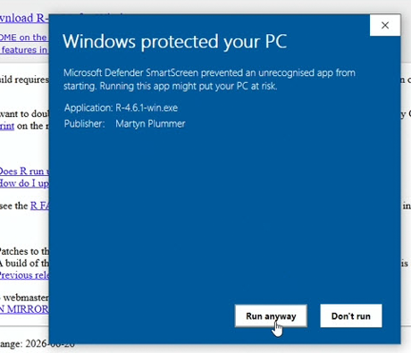
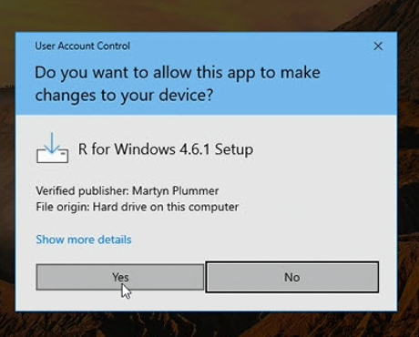

Troubleshooting
Most problems during setup and early use are one of a handful of things. Find the one that matches yours below. This page grows over time.
Security warnings when downloading or installing
Installing R or RStudio for the first time can bring up a warning or two — a browser prompt, a blue “Windows protected your PC” box, or a request for a password on a work machine. This is normal for brand-new software from a source your computer hasn’t seen you use before; none of it means anything is wrong. Open the box that matches your situation:
When an installer finishes downloading, your browser may ask whether to keep the file. Keep it — it’s the installer you just requested.
Running the R installer, Windows may show a blue SmartScreen box offering, at first, only a Don’t run button. This is reputation-based, not a virus alert: it appears because the file is newly released and too few people have downloaded it yet for Windows to recognize it — not because anything is wrong with it. Click More info and the box expands to show the app name and the publisher, along with a Run anyway button. Only ever do this for installers you downloaded yourself from the official sources — cran.r-project.org for R and posit.co for RStudio.

On some machines — most often university- or employer-managed ones — the blue box appears with no More info link at all: just a Don’t run button and no way past it. This usually happens when the installer is launched from the browser’s download list. The fix is to launch it from your Downloads folder instead: open File Explorer, go to Downloads, and double-click the installer there. If the box still offers no way through even from the Downloads folder, you’re in the managed-computer situation — see the next box down.
Next, Windows asks permission to make changes to your computer — the User Account Control box. It opens with No highlighted, so you have to click Yes on purpose. Where it names a verified publisher, that’s Windows confirming the installer’s digital signature checked out. (RStudio’s permission box looks the same. You generally won’t see the SmartScreen step for RStudio, because its publisher is already widely recognized.)

One last thing, if you ever download an installer twice: the second copy comes back with a number added to its name, like R-4.6.1-win (1).exe. Any copy is fine to run — the (1) is just your browser avoiding a name clash, not a different or altered program.
On a university or workplace computer you may not be allowed to install software yourself. What happens depends on how the machine is set up:
- The blue box shows no More info link at all, even when you launch the installer from your Downloads folder. This one looks worse than it is: the block has been set centrally, so there’s nothing to fix at your end — and it’s a routine request for IT, often settled in a single phone call. Ask your IT service desk to unblock the R and RStudio installers, or to install them for you; going through them keeps everything in line with your organization’s policies. The note below is written for whoever picks it up.
- The install is blocked, but the screen offers a path to temporary administrator rights — usually a prompt for your own credentials, sometimes followed by a box asking why you’re installing. Both are routine; fill them in and carry on.
- There’s no self-service path, in which case R and RStudio are requested through your IT service desk, a software catalog, or your instructor. The note below is written for whoever handles that request — you can point them straight to it.
The rest of this entry is addressed to IT staff.
A student or researcher has asked to install R and RStudio Desktop, the standard open-source tools for statistical computing and the environment these guides teach. This note summarizes their provenance to support a software-approval assessment.
- Sources. R is published by the R Foundation through CRAN (cran.r-project.org); RStudio Desktop comes from Posit (posit.co / docs.posit.co). Both are long-established and in wide academic and government use.
- Signatures and integrity. The R for Windows installer is code-signed — the User Account Control dialog shows a verified publisher — and it is downloaded over HTTPS from CRAN, which also publishes checksums for verifying the download. RStudio Desktop is signed by Posit Software, PBC.
- Installing without administrator rights. Administrator rights aren’t strictly required. Run without them, the R for Windows installer installs into the user’s own file area instead of Program Files (administrator rights are needed only for a system-wide install and the optional registry entries). RStudio Desktop is additionally offered as a Windows
.ziparchive that can be unpacked and run without the installer; current deployment guidance is on Posit’s documentation site. - SmartScreen. Microsoft SmartScreen may flag a freshly released version until it accumulates download reputation; this resets with each release and is not an indication of malware. Where the user reports the warning with no More info option at all, that is typically SmartScreen configured to warn without a bypass rather than the default reputation check; the installers are code-signed and their provenance is above, so clearing it is at your discretion.
- Organizations operating under standards such as ISO/IEC 27001 will route this through their software-approval process; the information above is provided to support that assessment.
Installing jstats
During the install, the Console may print a red WARNING that Rtools is required to build R packages. It looks alarming, but it’s normal and not an error: it’s RStudio’s general-purpose check for build tools, and it fires on almost any package install on a Windows computer that doesn’t have Rtools. jstats doesn’t need Rtools — it contains no compiled code and installs as a ready-made binary — so the install completes and jstats runs fine. You can ignore the warning; there’s nothing to fix.
The answer to that question is No. Nothing is broken if you clicked Yes — the install may just stall, fail, or fill the Console with red text.
Run the install line on the Install jstats page again, and click No this time.
The simplest fix is to remove jstats and install it fresh:
remove.packages("jstats")
install.packages("jstats",
repos = c("https://jma61.r-universe.dev", "https://cloud.r-project.org"))
library(jstats)On many Windows computers the Documents folder is synced by OneDrive — and by default that is where R keeps its package library (the folder your installed packages live in). OneDrive can lock files while it syncs, and an install that runs into a lock fails part-way with messages like the ones above.
Fixes, from simplest to most durable:
Pause OneDrive and retry. Click the OneDrive cloud icon near the clock, choose Pause syncing, run the install line again, then resume syncing.
Give R a package library outside the synced folder. This one-time setup ends the problem for good. Create a plain folder directly on your drive, such as
C:\Rlibs. Then create a plain text file named.Renvironin your Documents folder containing this single line:R_LIBS_USER=C:/Rlibs(Note the forward slash — that’s how R writes paths.) Restart R and run the install line again; packages now install to the new folder, out of OneDrive’s reach.
A related, rarer cause of the same errors: a Windows username containing accented or non-English characters can break the library path in the same way. The same fix applies — a package library at a simple location like C:/Rlibs.
On managed work or lab computers, two things can stop the install: your account may not be allowed to install software, or the network may block downloads from sites it doesn’t recognize. Neither is anything you did wrong — and the request to your IT support is a small one. jstats installs as a ready-made binary (no compilers or build tools are needed), fetched from the two addresses in the install line: the r-universe repository (jma61.r-universe.dev) and an ordinary CRAN mirror (cloud.r-project.org). Ask IT either to allow those two addresses or to run the install line for you; either way it’s a quick job for them.
R keeps installed packages in a library — a folder on your computer — and there can be more than one. That’s normally invisible and harmless: jstats installs into one of them and runs fine from there.
It only matters if you end up with two copies in two libraries — then an update can land in one library while R keeps loading the older copy from the other, and you appear stuck on the old version. To see which copy R is using, and every library R searches:
find.package("jstats") # the folder of the copy R loads
.libPaths() # every library R searches, in orderIf those reveal a second, older copy, remove it from the library it sits in and restart R:
remove.packages("jstats", lib = "paste-the-other-library-path-here")Then load jstats again and confirm the version with packageVersion("jstats").
Starting RStudio and loading jstats
This almost always means an install command was put in your .Rprofile. That file runs every time R starts, so an install line tries to reinstall on every startup and can loop. Your .Rprofile should only ever hold lightweight startup lines like library(jstats) — never an install command. To recover: close RStudio, open your Project folder in your computer’s file manager, open the .Rprofile file in a plain text editor (Notepad on Windows, TextEdit on Mac), delete the install line, keeping the library(jstats) line (and its reminder comment, if your .Rprofile has one), save, and reopen RStudio.
While jstats is still in development it installs from an r-universe repository, and each time it loads it briefly checks that repository for a newer version. The package itself works fully offline, but on a machine that is connected to a network yet has no route to the open internet – common on locked-down lab or server installations – that check has to time out before loading finishes, so library(jstats) can pause for a few seconds.
To skip the check and load immediately, set this option before loading the package:
options(jstats.check_updates = FALSE)
library(jstats)Putting the options(...) line above the library(jstats) line in your .Rprofile makes it the default every session. On an ordinary internet connection you can leave it out – the check is fast there, and it’s how you learn an update is available.
This is specific to this pre-CRAN version. Once jstats reaches CRAN, installing and updating happen the normal CRAN way, with no startup check of this kind.
This shows up two ways: you run library(jstats) in the Console and get this error, or — if your .Rprofile loads jstats automatically — the same error greets you every time RStudio starts. Either way, the usual cause is that R itself was updated. Your installed packages live in a folder called a library, and each version of R gets its own — so updating R starts a fresh, empty one, and jstats (along with everything else you had installed) is no longer there.
The rule in plain words: R’s version numbers have three parts, like 4.5.2. Only a change to the middle number (4.5 → 4.6) starts a fresh package library; a last-number update (4.5.1 → 4.5.2) changes nothing about your packages. And this is about R, not RStudio — RStudio updates are always safe and never touch your packages. R has no built-in update notifier, so updating R is a separate, deliberate act; if you did it recently, this reinstall is the one follow-up chore.
(Why jupdate() can’t rescue you here: jupdate() is itself a jstats command, and jstats isn’t installed in the new library yet.)
The fix is the same install line as the first time — run it once and you’re back:
install.packages("jstats",
repos = c("https://jma61.r-universe.dev", "https://cloud.r-project.org"))
library(jstats)Don’t confuse this error with the harmless warning that jstats was built under R version 4.x.x — that one just means the ready-made copy was built on a slightly different R patch, needs no action, and clears on its own. This callout is about the actual error where jstats can’t be found at all.
jstats probably isn’t loaded in this session. Run:
library(jstats)If it still isn’t found, check spelling and capitalization — R is case-sensitive, so jfreq and jFreq are different names.
The shipped datasets become available once the package is loaded. Run library(jstats) first, then try again. (If you’re working with your own data instead, make sure you’ve loaded it — see Loading, Saving, Converting Data.)
Typing commands in the Console
If you press Enter and the Console answers with a + instead of the usual > prompt, R thinks your command isn’t finished — nearly always a closing quotation mark or a closing parenthesis is missing. Press the Escape key (Esc) to cancel and get a fresh > prompt, then retype or re-paste the whole command. (Typing more into the + line rarely ends well; Escape and a clean start is quicker.)
These errors are R’s way of saying the punctuation in a command doesn’t add up — most often a missing comma between two inputs, or a missing or extra parenthesis or quotation mark. Compare your line character by character against the example you copied it from; the difference is usually one small mark.
A reading tip that helps with R errors in general: in a long error message, the most useful part usually comes after the final colon — start reading there, then work backward only if you need to.